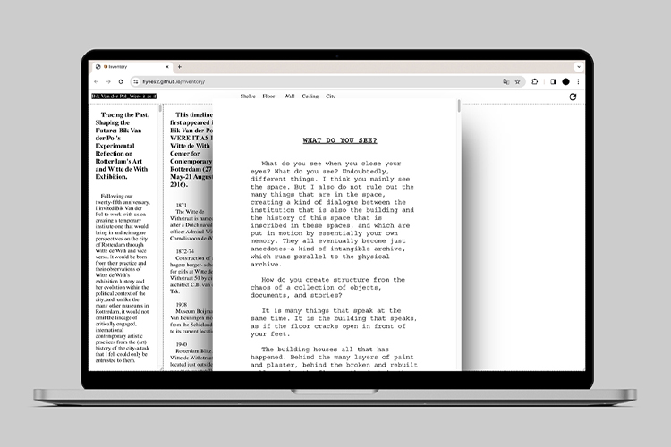

-
Petrichor
Petrichor is a fictional brand exploring experimental sound and mental health, using nature’s calming rhythms to foster well-being. We offer value to those seeking to enhance relaxation and deepen their personal connection through nature. By focusing on the most personal space—the bed—we create a tranquil atmosphere, subtly integrating sound elements to elevate relaxation and personal experience.
-
↑Plaça Nova↘Ciutat Vella↗La Ribera↑Plaza de Pau Vila
IPhone-sized flipbook was created using photos I happened to take while traveling in Spain. Using the information automatically stored by the iPhone, I traced back the moments captured while walking and the places visited.

-
Two Scapes
This convenience disconnects us from the natural world, leading us to forget our essential connection to it. Despite our integral role in the cycle of nature, we live without acknowledging our gratitude to it. It is also important to note that industrial agriculture and large-scale corporate farming practices are detrimental to both the environment and humanity. This video aims to emphasize the importance of acknowledging and appreciating our sources of sustenance, fostering a deeper connection and sense of responsibility toward the environment that supports us.
-
One to One Catalogue
Six large and heavy books were collected from the renowned Dutch book design collection curated by Huis van het Boek. The catalog is designed as a fold-out poster that starts at A5 and gradually expands to A0. As the poster unfolds, it moves from highlighting specific parts of each book to displaying the entire book and its detailed information. When fully expanded to A0, the poster also shows the actual size of the books.

-
Objects in the Mirror
This book is an experimental research report that emphasizes how our identity is shaped through interactions with external factors and highlights the vulnerability of the images we absorb to distortion. It reflects the idea that individuals can perceive the same images differently and explores the unique visual and conceptual messages.

-
Were it as if
reinterpreted the exhibition/publishing project 'WERE IT AS IF' byBik Van der Pol into a limited 2MB website. Emphasizing hidden or overlooked elements, I digitally transformed archival materials to capture the history of cultural institutions. Adjusting the grid of the exhibition presented in a multidimensional manner, I aim to enable viewers to discover the hidden layers of both the institution's history and the exhibition.
 -
Objects in the Mirror
This book is an experimental research report that underscores how our identity is shaped through interactions with external factors and highlights the susceptibility of the images we absorb to distortion. The project was born out of curiosity for experimentation, employing a blend of digital and physical methods.